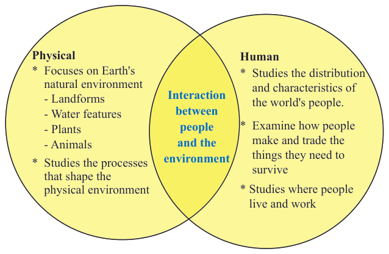

Information System (GIS), research, survey, remote sensing, and statistics.Practical geography also helps learners acquire skills that enhance their curiosity and ability to understood both physical and human geography (Figure 1.1).

Figure 1.1: Branches of Geography
Activity 1.4
Search for information from the library and other reliable online sources on the main branches of Geography, namely physical geography and human geography.
Then, write a short essay on what each branch is concerned with.
Exercise 1.1
1.With examples, differentiate natural features from man-made features within your surroundings.
2.How does physical geography contribute to our understanding of the Earth?
3.Why is practical geography important in studying physical geography and human geography?
Importance of studying Geography
Activity 1.5
Read from different reliable online sources, about the importance of studying Geography to human life.
Write a summary on the importance of Geography to human life.
The study of Geography is important because it increases awareness of our country as our national heritage, including its boundaries and resources.It helps to develop the basic skills of observation, measurement, recording, storing, analysing, and interpreting geographical phenomena.These skills help to generate scientific knowledge that enables us to predict outcomes of different processes and activities for appropriate decision making.Geography also helps us understand our
 Activity 1.4
Activity 1.4 Activity 1.5
Activity 1.5